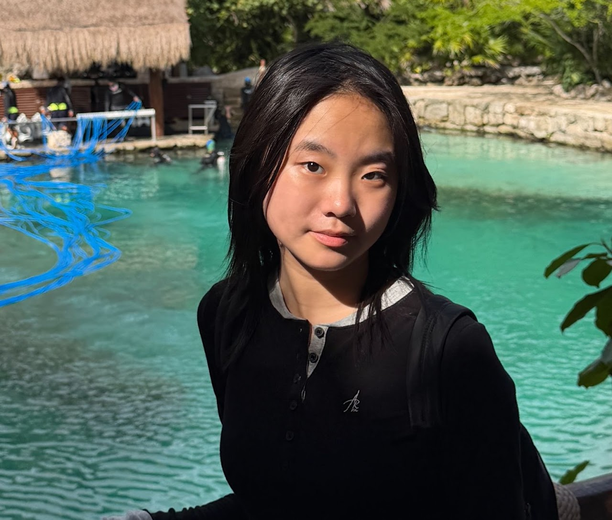
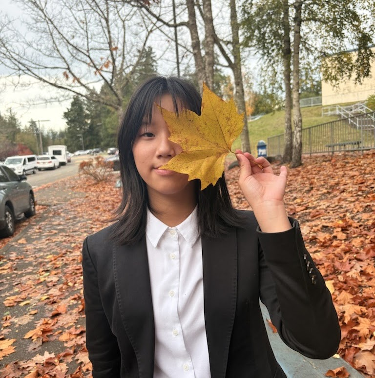
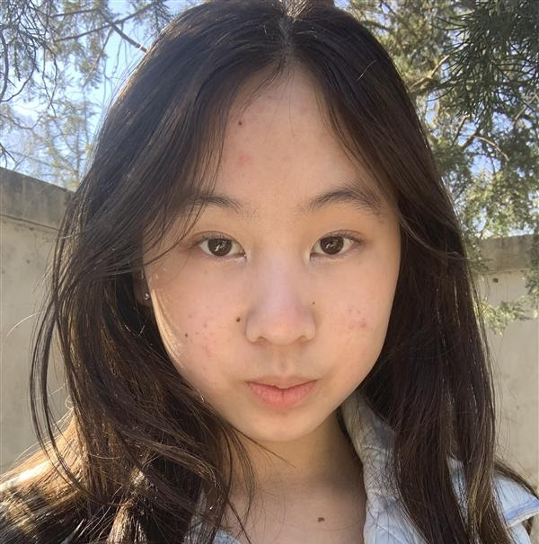

Ted Yun is a freshman at Interlake High School. He is currently doing Lincoln and Douglas and Extemporaneous Speaking, and has broken twice, and have earned a state bid over the past season. He is also a coach for Tyee Middle School's Speech and Debate Club, helping students to become very successful at their tournaments. Outside of speech and debate, he also enjoys cello, tennis, and programming.
Elena Fan

Elena is currently a freshman at Interlake High School and part of their Speech and Debate club. She does public forum debate and has so far broken three times in open (the highest division) this season, twice to octos and once to semis. She also coaches at Tyee Middle School, helping both less and more experienced debaters in improving their skills. Outside of debate, she also enjoys art, piano, and recreational writing.
Our Coaches
Jingqi Li

Jingqi is a sophomore at Interlake High School debating in Public Forum. She has debated since 7th grade and has gotten state bids and gone to elimination rounds multiple times.
Michelle Zhang

Michelle is a freshman at Interlake High School. She did PF for three years in middle school and has done LD this year. Besides debate, she plays chess and enjoys drawing and reading.